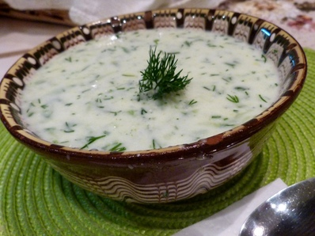
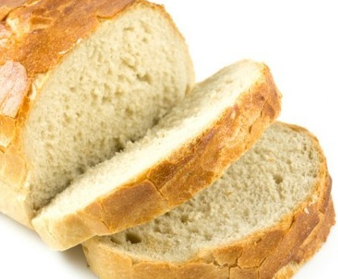
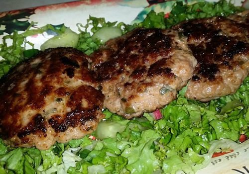
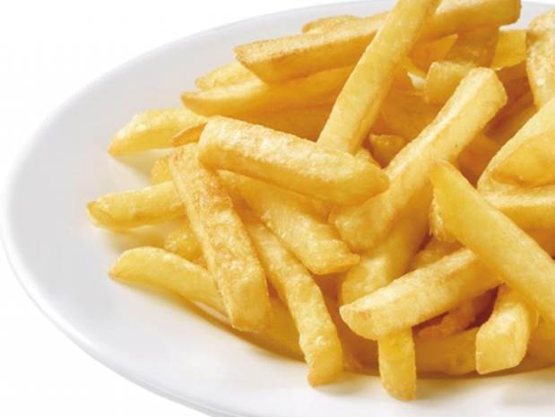
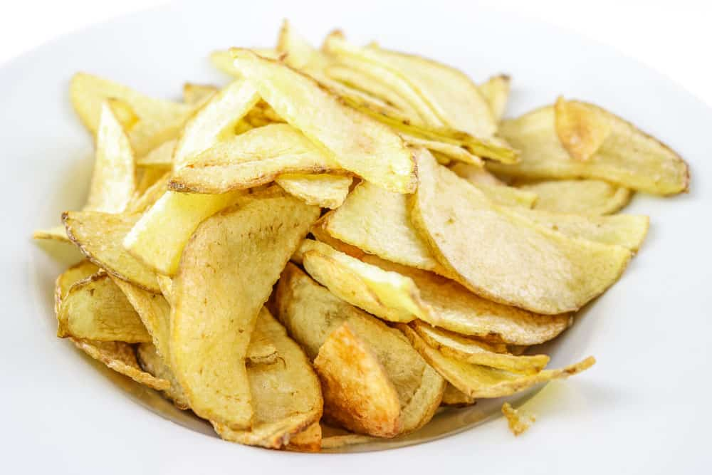
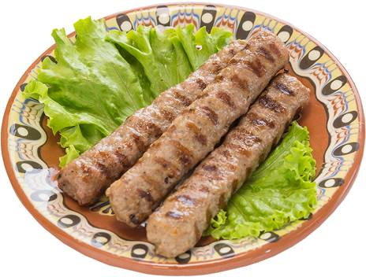
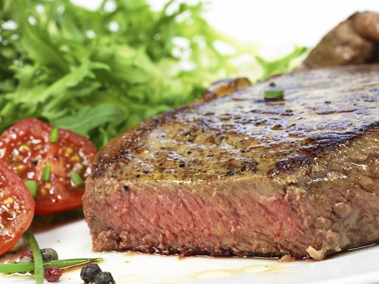
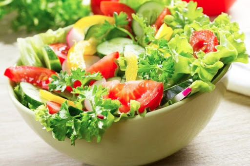

Храни, ястия
Тук ще ви представим няколко супер лесни рецепти за вкусни специалитети, които може да приготвите сами, дори да не сте готвили никога преди!
Таратор
|  | Необходими продукти: кисело мляко, краставица, олио, копър, сол, орехи Начин на приготвяне: Разбийте киселото мляко и го разредете с малко вода, изсипете го в съд. Нарежете краставицата на дребно, добавете олио, сол и копър за вкус. Орехите са пожелание. Насладете се на ухлаждаща доза таратор през лятото! |
Домашен хляб
|  | Необходими продукти: брашно, вода, олио, сол, мая Начин на приготвяне: Разбира се ако имате домашна хлебопекарна, това ще ускори работата Ви, но не сте загубени и без нея. Пригответе тестото: сложете всички продукти, след което размесете хубаво. За 1 килограм хляб са ви нужни: 525 гр. брашно, 330 мл. вода, 4 с.л. олио, 1 1/2 ч.л.сол и 1 1/3 ч.л. мая. Оставете го да втаса, след което изпечете. Вече имате готов домашен топъл хляб! |
Пържени кюфтета
|  | Необходими продукти: кайма, хляб, лук, яйца, сол, чубрица, брашно, олио Начин на приготвяне: Слагате каймата в дълбок съд, прибавяте двете яйца, лука, нарязан ситно, 4 филии който сте потопили предварително във вода и сте ги изстискали, солта, черния пипер, чубрицата. Размачквате качествено сместа и я оставяте да втаса. След което започвате да оформяте кюфтета в чиния с брашно и ги овалвате и от двете страни. След което слагате тигана с олиото на котлона на бавен огън да се затопли и поставяте колкото кюфтета се поберат. |
пържени картофи
|  | Необходими продукти: Картофи, олио Начин на приготвяне: Нарязвате картофите, по начин, който Вие искате, загрявате тиган с олио на бавен огън. Като загрее, слагате картофите, като гледате да не загарят. Страхотно мезе за бира! Бон апети! |
Домашен чипс
|  | Необходими продукти: Картофи, фритюрна мазнина Начин на приготвяне: За да го приготвите Ви е нужен фритюрник, на тиган не става! Нарязвате картофите на много тънки филийки, след което ги слагате във фритюрника. След няколко минти извадете. Посолете. Имате чудесно месе за Бирата! |
Специалитети на скара
|  | Необходими продукти: Кайма, подправки на вкус Начин на приготвяне: Няма нищо сложно в приготвянето на кебапчета и кюфтета на скара. Първо размачкайте каймата заедно с подправки по ваш избор и оформете кюфтетата/кебапчетата. Сложете ги на загрята скара, докато не се изпекат. Мммм...вкусно, нали! |
Свинска вратна пържола
|  | Необходими продукти: свински врат без кост, подправки на вкус Начин на приготвяне: Няма нищо сложно в приготвянето на пържола на скара. Начукайте врата, за да стане тънък, подправете го. Сложете на загрята скара, докато не се изпече. Мммм...вкусно, нали! |
Палачинки
 |
Необходими продукти: Брашно, прясно мялко/вода, яйца, сол Начин на приготвяне: В дълбок съд, първо разбийте 2-3 яйца. Добавете брашно и прясно мляко докато не добие гъстотата на боза. Ако нямате мляко, не се притеснявайте, ще стане и с вода. На загрят тиган слагайте по един черпак от сместта, за една палачинка. Можете да ги намажете със сконфитюр, течен шоколад, както и със сирене! Солена или сладка, палачинката си е палачинка! |
Зелена салата
|  | Необходими продукти: Зелена салата, краставица, репички, авокадо, лук, зехтин, оцет, сол Начин на приготвяне: Накъсайте салатата в купа, нарежете и останалите продукти. Подправете на вкус. Чудесно месе за всяко питие! |
Бързо и вкусно!